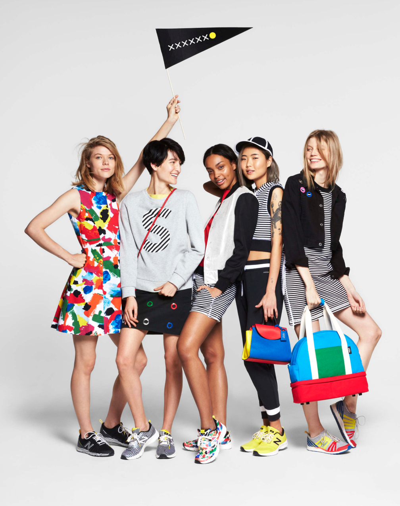

This work was completed with the amazing talent of Kate Spade Saturday. Lead by Kyle Andrews, Theresa Canning Zast and Katie Hatch. As Director of Brand Creative my team consisted of Theresa Caffrey, Jenna Kaminsky, Katie Schad, Kristie Malvindi, Mallory Rice, Dana Corl, Lauren Tamaki, Sung Mun, Gillian Haro, & Khira Jordan. With Pomaika‘i Neff and Caitlin McConnell.
I lead the design of marketing, communications, brand and e-commerce photography. During my tenure we launched four seasonal campaigns, photographed thousands of products, launched and maintained retail stores in Japan, Singapore, Los Angeles and New York.
fig7.1
Kate Spade Saturday's Spring 2916 Campaign photography by Brayden Olsen ↗, with Art Direction by Lauren Tamaki ↗
Kate Spade Saturday was a 40 person start-up lead by Director Kyle Andrew, Creative Director Theresa Canning Zast, and head of apparel and accessory design Katie Hatch and countless other incredible talented women. (For the majority of my time, I was the only male on the entire team.) For the second year of its two-year life I served as director of brand creative for Kate Spade Saturday, an accessible and more youthful apparel and accessories brand to its mother brand, the established Kate Spade NY brand.
As an in-house marketing, design, and content creation team we constantly devised new ways of planning the months ahead. When working properly combined learning from larger institutions like MoMA and J.Crew, assembling merchants, photo shoots, models, messages and delivery in sync with one another. A highlight was our final Holiday campaign in which we treated each e-commerce photo like an ad (many as video) and each marketing email as a story. Working with photographer Jimmy Marble we created a world unlike anything in fashion at the time and hit our numbers at the same time.
We had some big wins, some big defeats and the eventually the rug pulled from beneath us as the brand’s parent company Limited Brands decided to invest more in licensing than in product creation shuttering all Jack Spade store and all Saturday operations.
We were extremely proud of what we made and the people we met along the way. The Kate Spade Saturday diaspora reaches far and wide.
Advertising, Exhibitions, and Brand Stewardship at The Museum of Modern Art. Typography connects everything 2010-2012.Associate Creative Director, In-house
Advertising, Exhibitions, and Brand Stewardship at The Museum of Modern Art. Typography connects everything 2010-2012.Associate Creative Director, In-house
Advertising, Exhibitions, and Brand Stewardship at The Museum of Modern Art. Typography connects everything 2010-2012.Associate Creative Director, In-house
Advertising, Exhibitions, and Brand Stewardship at The Museum of Modern Art. Typography connects everything 2010-2012.Associate Creative Director, In-house
Advertising, Exhibitions, and Brand Stewardship at The Museum of Modern Art. Typography connects everything 2010-2012.Associate Creative Director, In-house
Advertising, Exhibitions, and Brand Stewardship at The Museum of Modern Art. Typography connects everything 2010-2012.Associate Creative Director, In-house
Advertising, Exhibitions, and Brand Stewardship at The Museum of Modern Art. Typography connects everything 2010-2012.Associate Creative Director, In-house
Advertising, Exhibitions, and Brand Stewardship at The Museum of Modern Art. Typography connects everything 2010-2012.Associate Creative Director, In-house